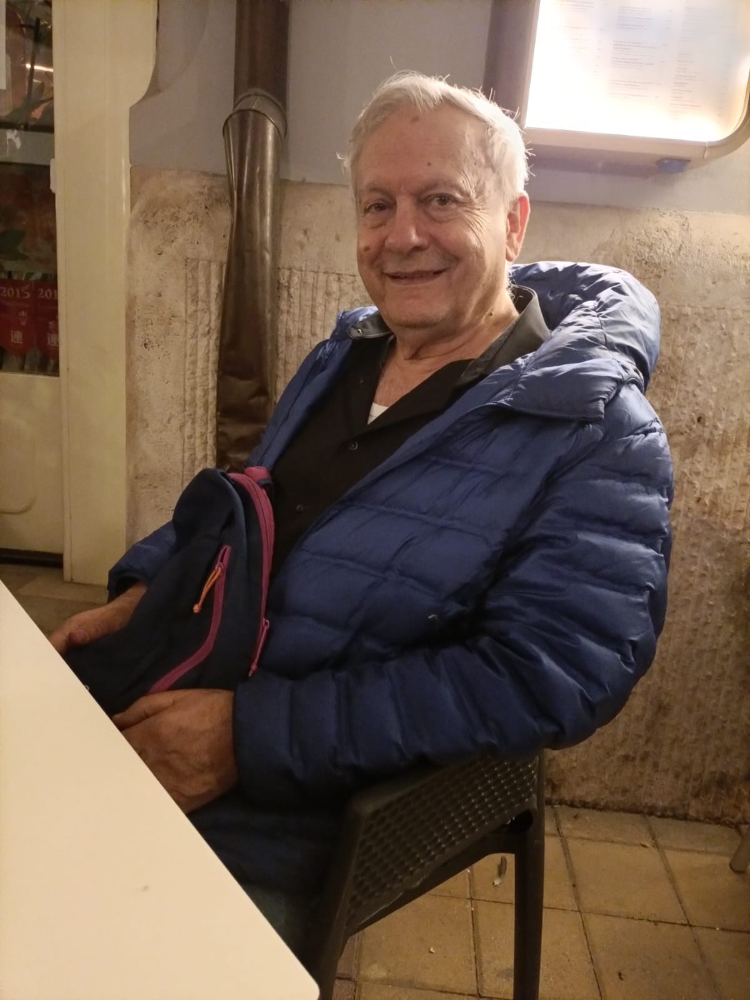

ברוכים הבאים לאתר המאמרים שלי.
כאן תמצאו מאמרים בנושאי תנ"ך, ספרות עברית, ומסורת יהודית.
מי אני? נולדתי במרקש בתחילת שנות הארבעים של המאה העשרים. עליתי לארץ במסגרת עליית הנוער והתחנכתי בבית צעירות מזרחי בירושלים ובישיבת נחלים. לפני גיוסי לצבא השתתפתי בחידון התנ״ך 1961 כצעיר המשתתפים. בתקופה זו בערך יצאתי בשאלה. בעל תואר ראשון ושני מאוניברסיטת ת״א, ותואר דוקטור באנתרופולוגיה מאוניברסיטת שיקגו. פנסיונר של המרכז למחקר כלכלי וחברתי בעירית תל-אביב. אב לשלושה וסב לארבעה. מתגורר בתל-אביב עם בת זוגי גבי.
